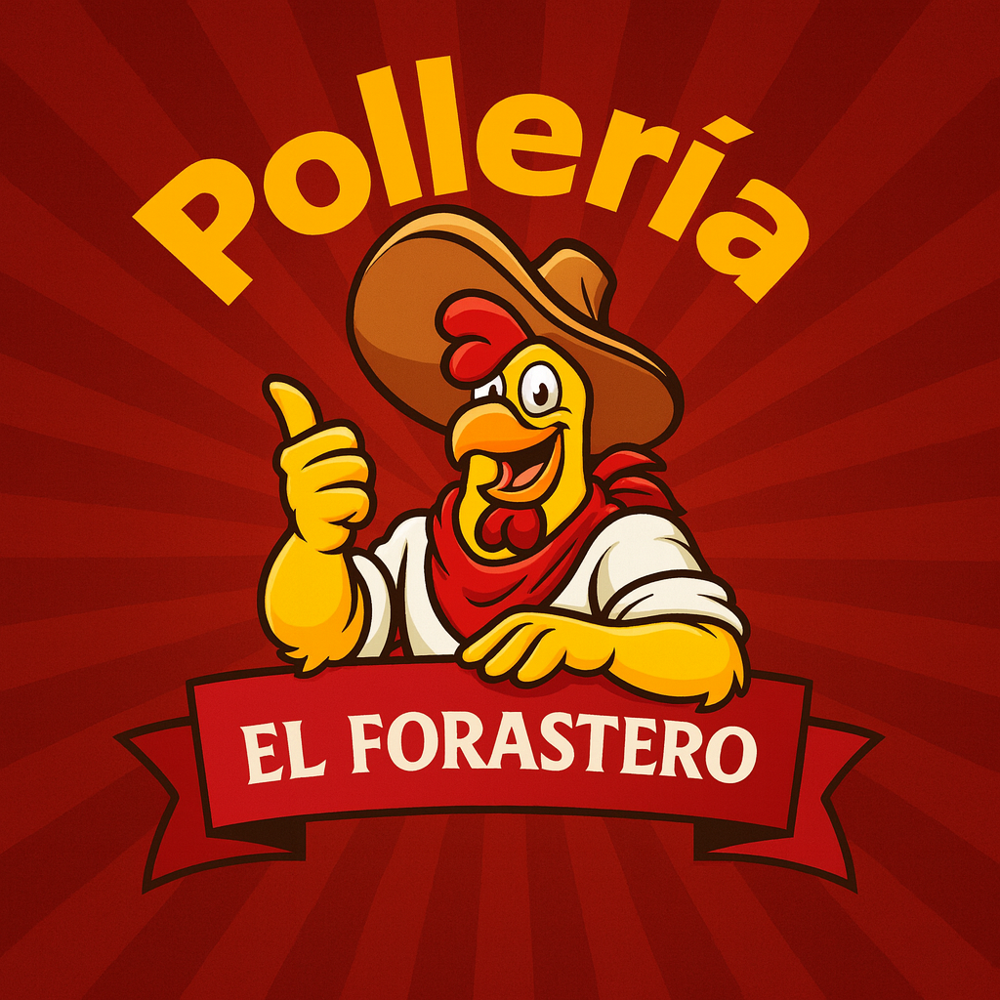
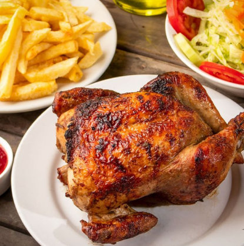
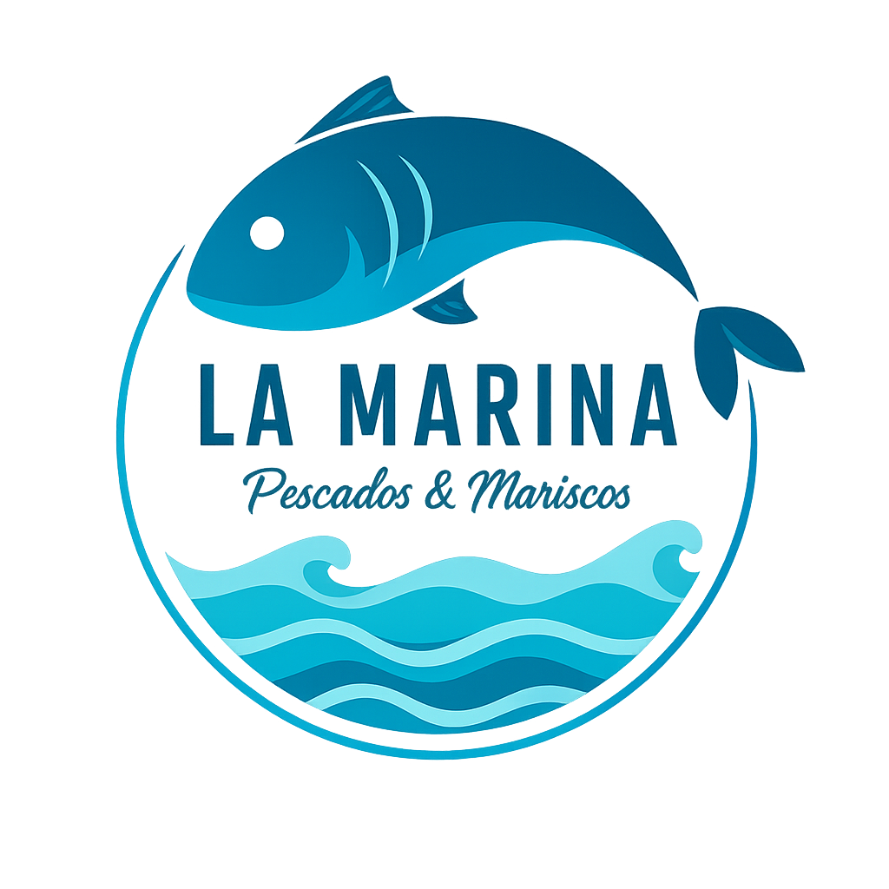
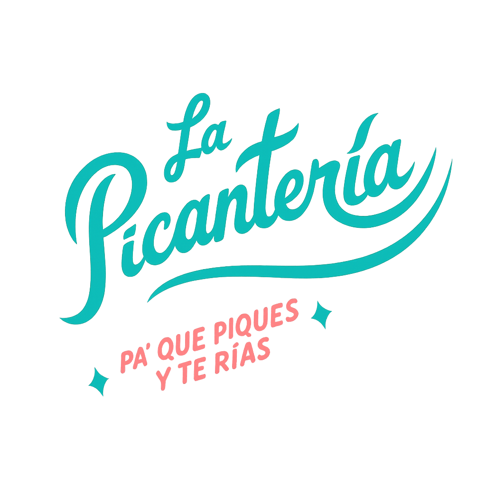
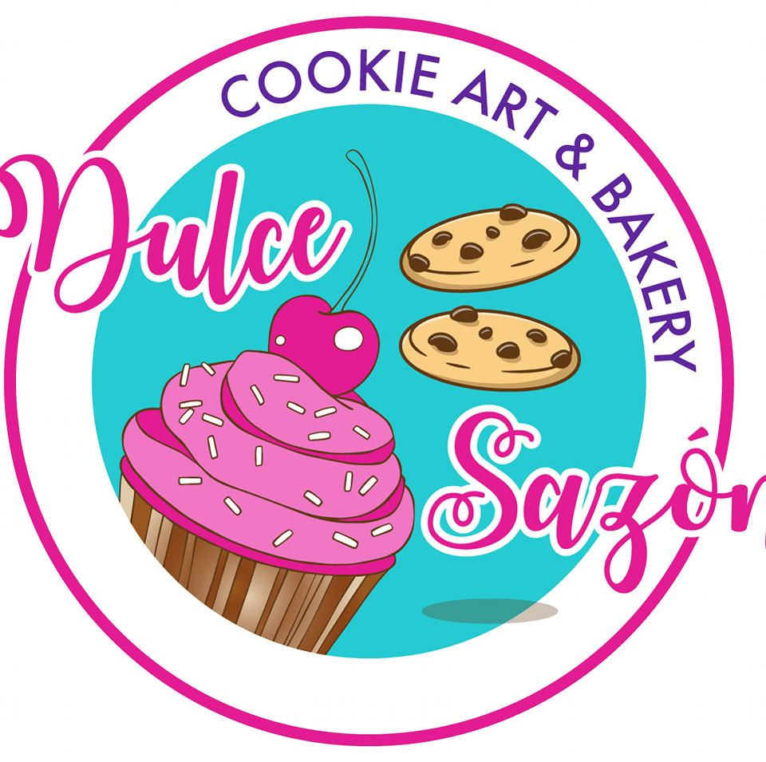

Sabores auténticos cerca de ti
Descubre los Mejores Huariques de Lima
Te ayudamos a encontrar huariques auténticos, comparar reseñas reales y descubrir sabores locales cerca de ti.
Huariques verificados
Reseñas reales
Promos locales

+500 Huariques
4.9/5 Rating
100% Auténtico
0
Huariques registrados
0
Usuarios activos
0
Reseñas auténticas
0
Distritos de Lima
¿Por qué elegir PuntoSabor?
La plataforma que transforma cómo descubres y apoyas la gastronomía local peruana.
Encuentra cerca
Descubre huariques auténticos en tu zona con nuestro mapa interactivo. La comida casera que buscas está más cerca de lo que piensas.
Reseñas reales
Lee opiniones honestas de comensales como tú. Sin filtros, solo experiencias auténticas compartidas por la comunidad.
Promociones exclusivas
Accede a ofertas especiales y descuentos en tus huariques favoritos. Ahorra mientras apoyas negocios locales.
Apoya local
Cada visita que haces ayuda a emprendedores peruanos a crecer. Sé parte del cambio en tu comunidad gastronómica.
Notificaciones
Recibe alertas cuando tus lugares favoritos lancen nuevos platos o promociones especiales. Nunca te pierdas nada.
Fácil de usar
Interfaz intuitiva diseñada para que encuentres lo que buscas en segundos. Simple, rápido y efectivo.
Huariques que te van a enamorar
Una probadita de los sabores auténticos que te esperan en la app.



Cómo funciona
En 3 simples pasos estarás disfrutando de los mejores sabores locales.
1
Regístrate gratis
Crea tu cuenta en menos de 2 minutos. No necesitas tarjeta de crédito, solo tu email y estás listo para comenzar.
2
Explora huariques
Busca por zona, tipo de comida o plato favorito. Lee reseñas auténticas, ve fotos deliciosas y encuentra tu próximo lugar favorito.
3
Disfruta y comparte
Visita el huarique, disfruta de comida auténtica y comparte tu experiencia con la comunidad para ayudar a otros.
Planes para tu negocio
Elige el plan perfecto para hacer crecer tu huarique.
BÁSICO
Gratis
Para siempre
- Perfil de negocio completo
- Aparece en búsquedas
- Reseñas de clientes
- Galería de fotos
- Horarios y ubicación
MÁS POPULAR
PREMIUM
$35
al mes
- Todo lo del plan Básico
- Destacado en búsquedas
- Promociones destacadas
- Estadísticas detalladas
- Soporte prioritario
- 3 publicaciones mensuales
EXCLUSIVO
$50
al mes
- Todo lo del plan Premium
- Posición #1 en resultados
- Publicidad en home
- Gestión de eventos
- Consultoría personalizada
- Publicaciones ilimitadas
Lo que dicen nuestros usuarios
Miles de personas ya descubren sabores únicos cada día.
“Gracias a PuntoSabor encontré el mejor ceviche de mi vida a 3 cuadras de mi casa. ¡No tenía idea que existía este lugar!”
“Como dueño de un pequeño restaurante, PuntoSabor me ayudó a llegar a más clientes y mostrar mejor mis platos.”
“La app es súper fácil de usar y las reseñas son honestas. Ya he probado varios huariques nuevos este mes.”
¿Listo para descubrir sabores únicos?
Únete a miles de personas que ya apoyan la gastronomía local peruana.
Oferta especial:
Primeros 100 negocios obtienen 3 meses Premium gratis